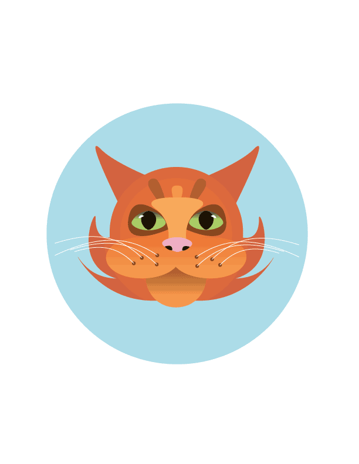
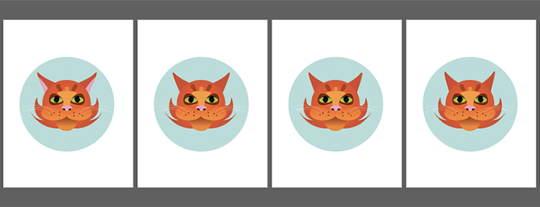
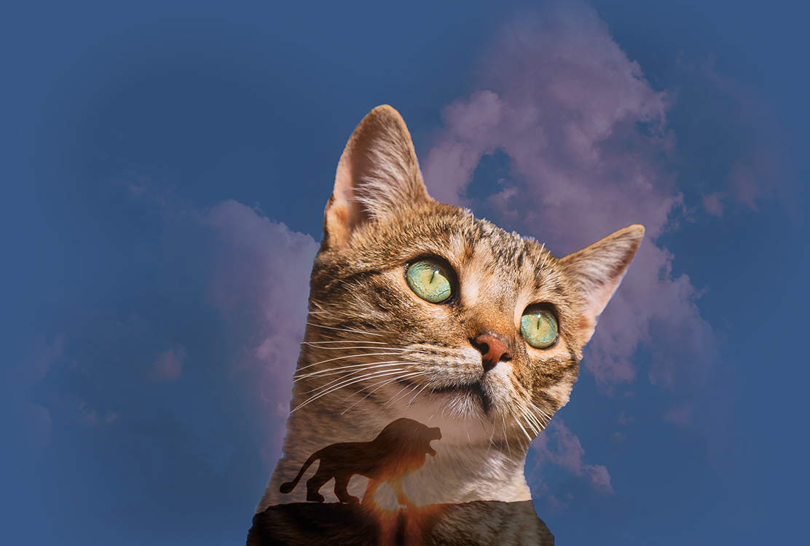
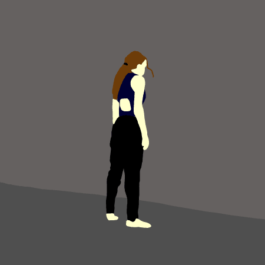
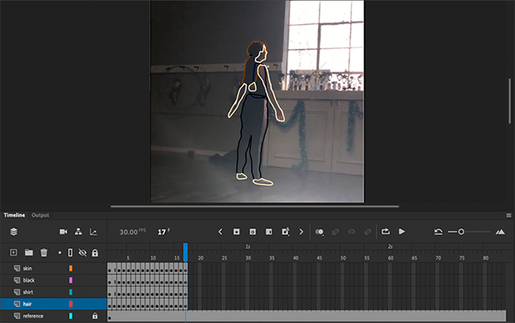
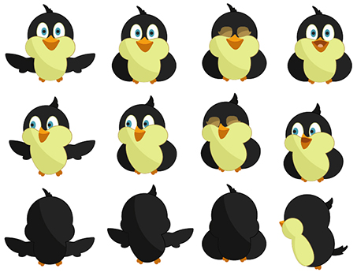
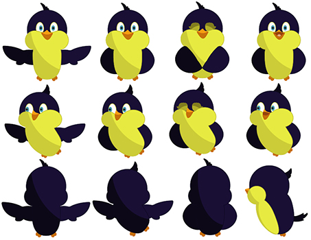

'Imagine', typography portrait graphic of John Lennon using his lyrics to "Imagine".
Different typographic techniques such as clipping masks and warp perspective used to create dimension and pattern.
Animated Gif


Cat gif created using the puppet pin tool technique in Adobe Illuatrator. Movement is displayed by creating different frames using art boards, and exporting as a .gif through Adobe Photoshop.
Adobe Photoshop Projects
Double Exposure

Double Exposure photoshopping technique: I used this layering technique to combine a photo of a cat with a scenic photo of a lion to create a storyful double exposure.
Below: The first result of following a double exposure tutorial.
Other Projects
Adobe Animate Gifs
Rotoscoping technique to animate a short video frame by frame.

First: My first test run using the rotoscoping technique in Adobe Animate. I filmed a simple video brushing a canvas and traced the shapes frame by frame.
Second: My final animated gif of a human movement using rotoscoping. I used a short clip of myself from a dance practice (as seen below). Exported at 450x450, 24FPS.

Kinetic Typography
"If You're a Bird" Kinetic Typography & Animation created in After Effects.
Animation of two birds to poetry by Shel Silverstein, recited by Dave Pagurek. Background music "Mockingbird" composed and recorded on flute by Sari Pagurek.
Process: Before creating an After Effects composition, I created sprites of my bird characters as well as backgrounds in Adobe Illustrator, and manipulated the layers in After Effects using keyframing and the puppet-pin tool.


Coded Bias Documentary Reflection
“Coded Bias” Documentary Reflection
Coded Bias illustrates the issues of personal information and privacy as well as the racism and sexism that is integrated within the evolving industry of artificial intelligence and facial recognition software. MIT researcher Joy Buolamwini starts by demonstrating how a sample facial recognition software quite literally requires her to wear a white mask to be fully detected. Hearing this, I was quite surprised by how blatantly racist the system was, but upon her explanation it makes full sense. Artificial intelligence learns from the data it is given, and since the technological industry is dominated by white men; women, people of colour, and minority groups are recognized with the lowest accuracy.
In another real-life example given, a high-tech company using AI as a first scan through resume applications was shown to actively reject female applications from continuing on in the hiring process. This just goes to show how a system learning from societies flawed ways skews itself and continues on the cycle. I don’t believe that these softwares are inherently bad, but without societal change in the way we view roles within the industry, the “coded bias” will continue to discriminate.
Coded Bias also addresses the personal profile of information gathered from all people on the web. Before watching the documentary I was aware of how many large companies collect personal information, like social media and google, but I think it’s important to recognize how these companies share your information for things like targeted advertising. The film definitely highlighted how little I know about company’s data policies and their terms and conditions.